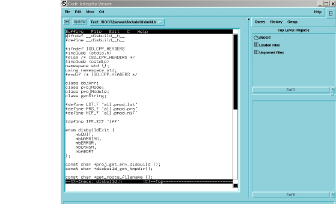

Text
You can generate a text view of virtually any code entity simply by double-clicking that entity in the Browser’s Elements or Results column. The Viewer displays the corresponding file, focused on the selected entity.

For convenience, you can color code text views by selecting View > Options > Decorate Source. This enables you to locate entities more quickly.
The text view is an Emacs-like buffer, offering most of the available Emacs functionality. You can also use gVim, if you prefer. You can edit your source code on the spot, and use the Browser’s CM menu functionality to check out files and check in the changes you make.